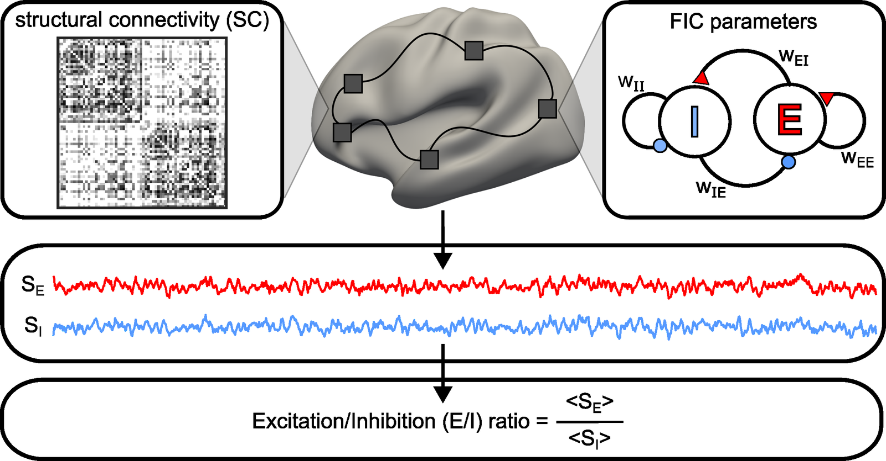

Nature Methods 2026 Accepted in principle
Optimizing biophysical large-scale brain circuit models with deep neural networks
Biophysical models let us reason mechanistically about the brain, from single-neuron dynamics up to large-scale circuits, and their parameters mean something biologically — many can even be measured directly. The unknown ones have to be fitted, and that is the bottleneck: every candidate parameter set requires numerically integrating the model's differential equations, which is far too slow for datasets the size of a population.
We built DELSSOME (Deep Learning for Surrogate Statistics Optimization in Mean field modeling), which skips the integration entirely and predicts directly whether a parameter set produces realistic brain dynamics. Across three large-scale circuit models it is 1500–8000× faster than numerical integration at that judgement, and dropped into an evolutionary optimization strategy it makes parameter estimation 50–100× faster without giving up agreement with numerical integration.
That changes what is affordable. Because of the compute cost, most studies simulate large-scale circuit models only at the group level; DELSSOME makes individual-level fitting of the feedback inhibition control (FIC) model practical. Collating 12,005 individuals across 14 datasets, we derive the first normative trajectories of cortical excitation–inhibition ratio across the lifespan, which reveal sex differences and network-specific patterns.